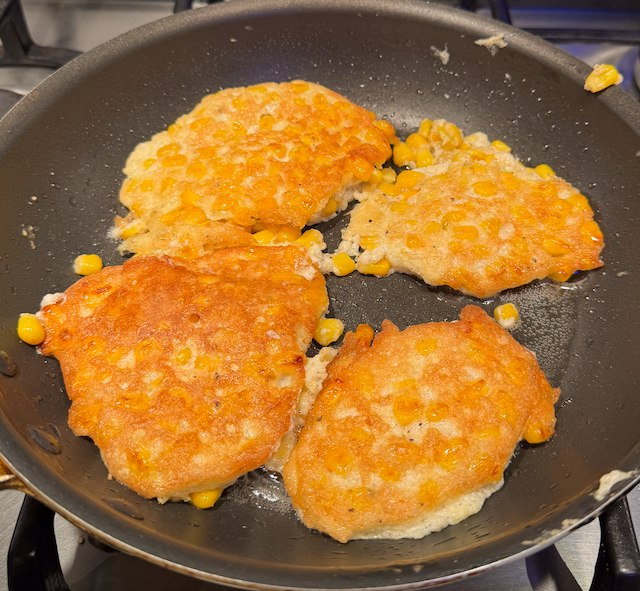
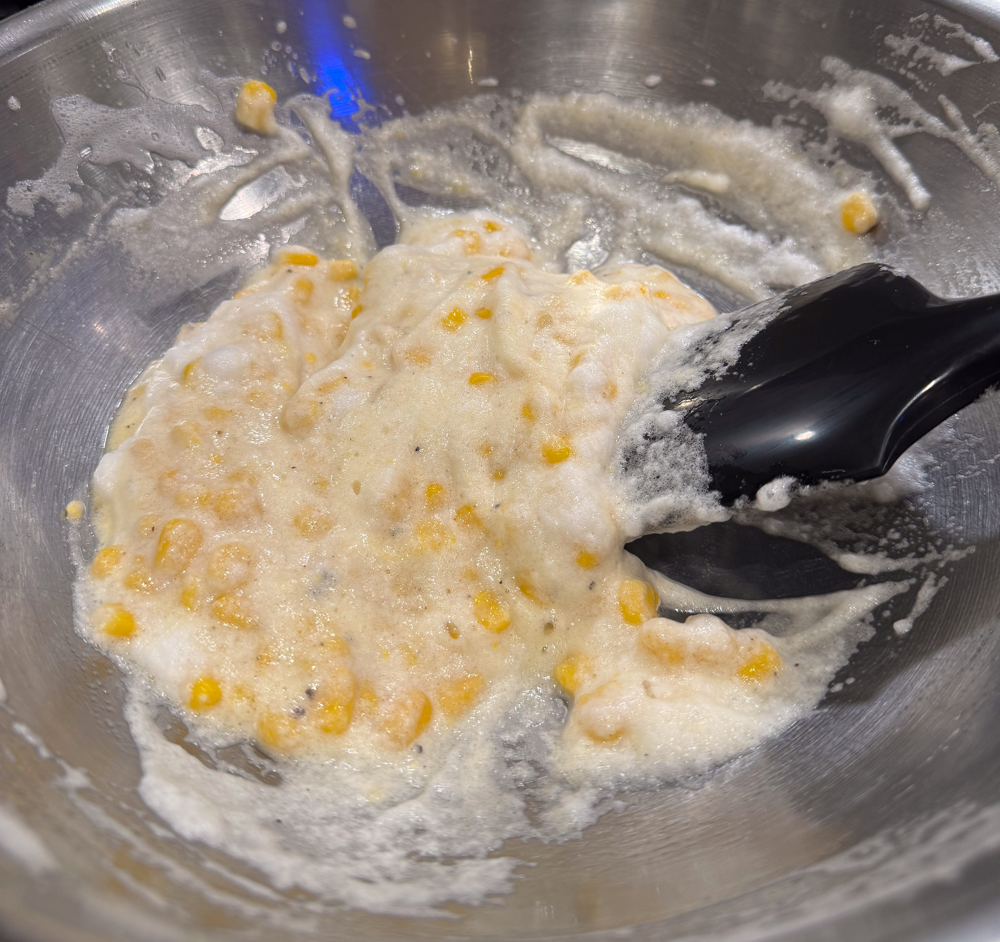

Sweetcorn Fritters

Serves: 4 as a side
Cook Time: 15 min
Ingredients
- 1 egg
- 200g tin sweetcorn, drained
- 1 tbsp plain flour
- salt and pepper
Method
Separate the egg.
Mix the yolk, flour and sweetcorn together in a small bowl, with salt and pepper.
Whisk up the egg white to soft peaks.
Carefully fold the sweetcorn mixture into the egg whites.
Heat a pan to medium hot. Add vegetable oil and blob in the mixture to make 4 fritters.
Cook for a few min until coloured, then flip the fitters and cook for another few min.
